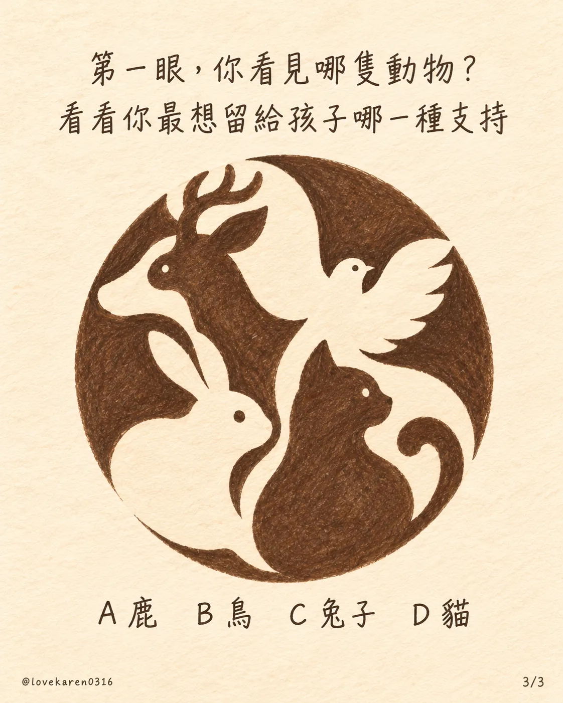

THE LOVE WE LEAVE WITH THEM
當孩子慢慢長大
妳最想留給她什麼？
第一眼看見哪隻動物？
從 A 到 D，看看妳想給孩子的那份支持

選好了嗎？點開妳的答案，看看妳最想給孩子的那份愛。
哪隻動物，先走進妳眼裡？
每個答案，都是一種很真實的愛。
A鹿｜安穩的守護妳希望她知道：身後一直有人
妳最想留給孩子的支持
讓她安心往前走
妳不是想替孩子擋掉所有風雨，而是希望她知道，就算跌倒、迷路，身後還有人願意接住她。
她慢慢長大，妳也在練習放手。妳給的安全感，是「妳可以去試，我會在這裡」。
「往前走吧，累了就回來。我一直都在。」
今天可以試試：當孩子遇到難題，先問她「妳想要我陪妳想，還是先聽妳說？」
B鳥｜被信任的自由妳希望她敢飛，敢選自己的路
妳最想留給孩子的支持
讓她有勇氣做自己
妳知道，孩子總有一天會走到妳看不見的地方。捨不得是真的，但比起留住她，妳更希望她相信自己有能力去闖。
妳的愛不是替她決定方向，而是在她回頭時，給她一個肯定的眼神。
「去看看妳喜歡的世界。媽媽相信妳。」
今天可以試試：聽她說一個自己的決定，先問「妳怎麼想的？」再分享妳的意見。
C兔子｜被理解的溫柔妳希望她脆弱時，也能放心做自己
妳最想留給孩子的支持
讓她不用一直逞強
當孩子說「我沒事」，妳也許聽得出她其實有點難過。妳最想給她的，不是一套立刻變好的方法，而是一個不用假裝堅強的地方。
妳願意陪她慢慢說，也願意在她還不想說時，安靜待在旁邊。
「在媽媽面前，妳不用每次都很勇敢。」
今天可以試試：說一句「妳想說的時候我都在」，然後把說話的時間交還給她。
D貓｜能回來的地方妳希望她擁有自己的世界，也有一個家
妳最想留給孩子的支持
給她空間，也留一盞燈
妳明白親近不代表時時刻刻黏在一起。孩子需要自己的步調，也需要知道：不管多久沒說心事，回頭時妳還是願意聽。
妳給她的支持，是尊重她的距離，也把家的門一直留著。
「有妳自己的生活很好，想回來的時候，家都在。」
今天可以試試：傳一句不需要立刻回覆的「有空回來吃飯，想聊什麼我都聽」。
這是一個分享心情的趣味小測驗，沒有標準答案，也不是心理診斷。
愛她，也記得照顧自己 ↓
四隻動物，讓我們看見
四種想留給孩子的支持
她會慢慢長大，有一天走向自己的世界。媽媽能給的愛，也會從牽緊她的手，變成陪她找到自己的路。
Hi，我是 K媽
我是一個媽媽，也用 AI ＋ 自媒體記錄生活、經營內容。
女兒長大的每一步，都讓我重新學習怎麼愛她。希望這份小測驗，也陪妳聽見自己心裡想說的話。
孩子長大，愛也會換一種模樣
不管妳選了哪個答案，願我們都能用自己的方式，讓孩子知道：她一直被愛著。
看看 K 媽的水晶選物 ↗